（一）、集群规划：选择三台机器分别为node1、node2、node3来组成集群环境。
其中node1上安装master和worker进程；node2上安装worker进程；node3上安装worker进程。
（二）、anaconda on linux安装过程：
（1）前提：在linux服务器node1、node2、node3上都安装python(anaconda)。并安装pyspark虚拟环境。具体安装步骤如下。
1、在/export/server/目录下上传anaconda的安装包Anaconda3-2021.
05-Linux-x86_64.sh。
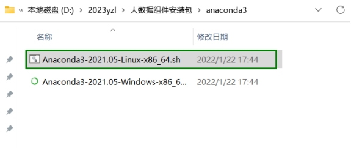
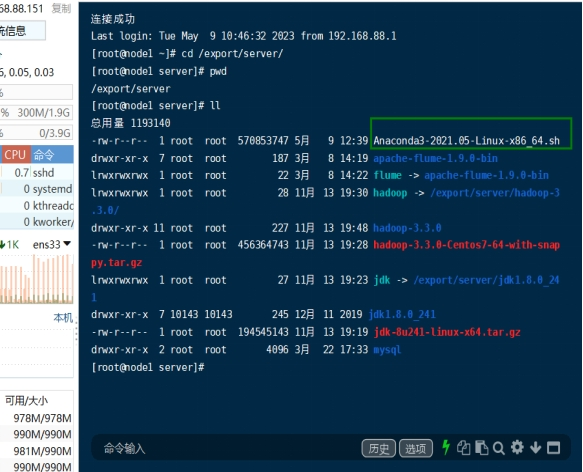
2、安装anaconda 使用命令：sh ./Anaconda3-2021.05-Linux-x86_64.sh
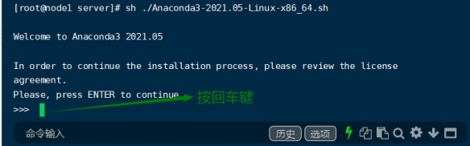
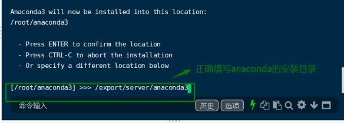
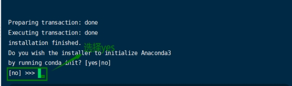
3、安装完毕之后若没有出现base环境，进行如下配置。在/root/.condarc添加国内源
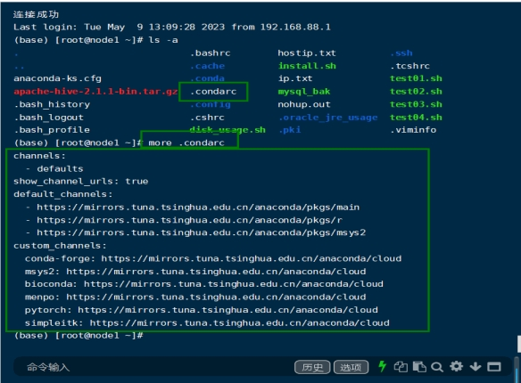
安装完毕后，关闭服务器重新启动，出现base环境即安装成功。
（2）在anaconda中，安装pyspark虚拟环境。
1、基于python3.8安装pyspark环境。
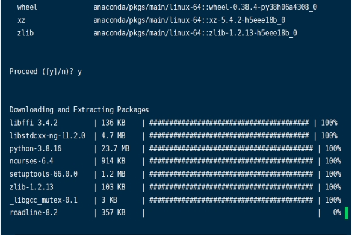
2、切换到pyspark中，并安装所需要的安装包。
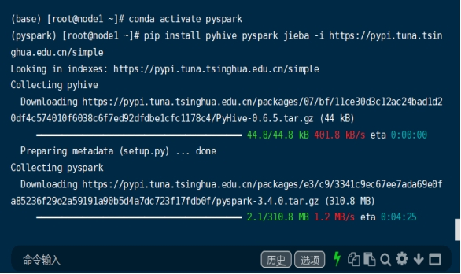
注：在node1、node2、node3三台服务器上都完成配置！
（三）、StandAlone模式部署
（1）安装spark压缩文件。
1、进入到/export/server/中上传并解压spark-3.2.0-bin-hadoop3.2.tgz。并设置软链接，命令为ln-s/export/server/spark-3.2.0-bin-hadoop3.2 /export/server/spark。
（2）在/export/server/spark/conf，配置文件。
1、首先在配置workers文件。mv workers.template workers；vim workers；
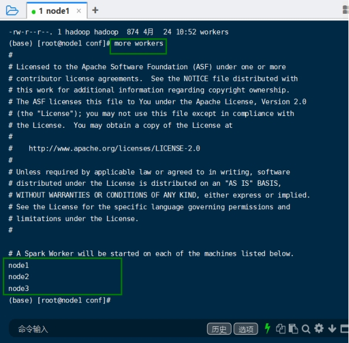
2.配置spark-env.sh文件。mv spark-env.sh.template spark-env.sh；
Vim spark-env.sh，添加如下内容。
## 设置JAVA安装目录
JAVA_HOME=/export/server/jdk
## HADOOP软件配置文件目录，读取HDFS上文件和运行YARN集群
HADOOP_CONF_DIR=/export/server/hadoop/etc/hadoop
YARN_CONF_DIR=/export/server/hadoop/etc/hadoop
## 指定spark老大Master的IP和提交任务的通信端口
# 告知Spark的master运行在哪个机器上
export SPARK_MASTER_HOST=node1
# 告知sparkmaster的通讯端口
export SPARK_MASTER_PORT=7077
# 告知spark master的 webui端口
SPARK_MASTER_WEBUI_PORT=8080
# worker cpu可用核数
SPARK_WORKER_CORES=1
# worker可用内存
SPARK_WORKER_MEMORY=1g
# worker的工作通讯地址
SPARK_WORKER_PORT=7078
# worker的 webui地址
SPARK_WORKER_WEBUI_PORT=8081
## 设置历史服务器
# 配置的意思是 将spark程序运行的历史日志 存到hdfs的/sparklog文件夹中
SPARK_HISTORY_OPTS=”-Dspark.history.fs.logDirectory=hdfs://node1:8020/sparklog/ -Dspark.history.fs.cleaner.enabled=true”
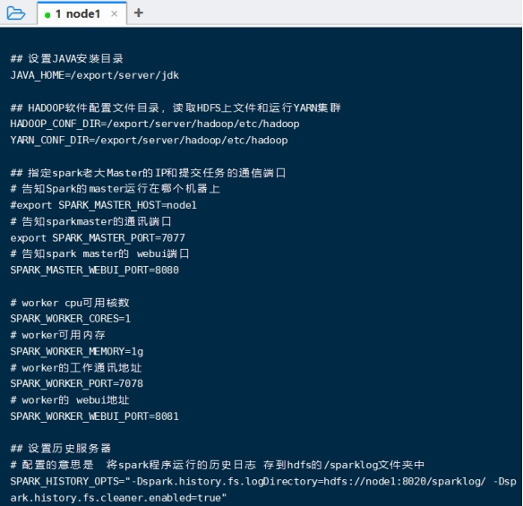
3、在HDFS上创建程序运行历史记录存放的文件夹。
hadoop fs -mkdir /sparklog；hadoop fs -chmod 777 /sparklog
4、配置spark-defaults.conf文件。mv spark-defaults.conf.template spark-defaults.conf；vim spark-defaults.conf，添加如下内容。
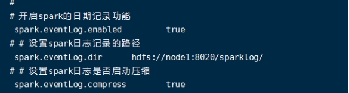
5、配置log4j.properties 文件[可选配置]。mv log4j.properties.template log4j.properties；修改配置，设置级别为WARN 只输出警告和错误日志。
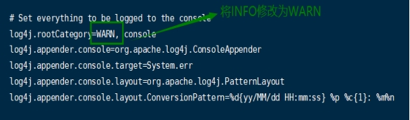
（四）、将spark分发到node2和node3服务器上。注意同时要设置软链接。
scp -r spark-3.1.2-bin-hadoop3.2 node2:/export/server/
scp -r spark-3.1.2-bin-hadoop3.2 node3:/export/server/
ln -s /export/server/spark-3.1.2-bin-hadoop3.2 /export/server/spark
注意：配置/etc/profile，JAVA_HOME；SPARK_HOME；PYSPARK_PYTHON都指向正确的目录。
（五）、启动历史服务器，启动Spark的Master和Worker进程
（1）启动历史服务器：sbin/start-history-server.sh
（2）启动全部的master和worker：sbin/start-all.Sh
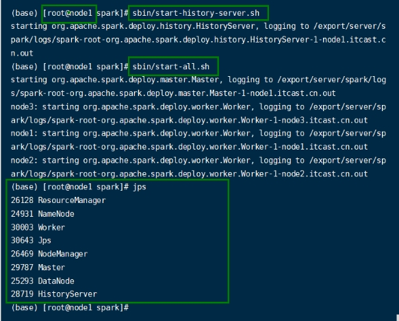
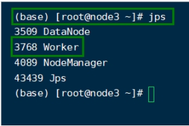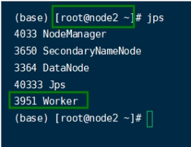
（六）、查看Master的WEB UI 在浏览器中输入node1:8080
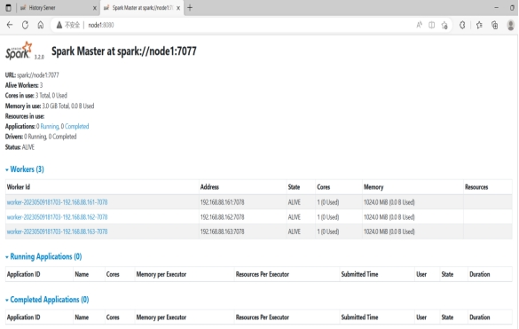
（七）、连接到StandAlone集群
（1）通过master来连接到StandAlone集群。
bin/pyspark –master spark://node1:7077
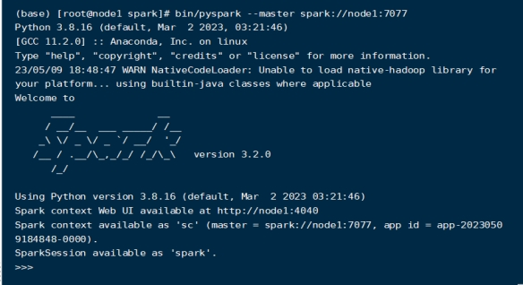
（2）使用spark-shell连接StandAlone集群。
bin/spark-shell –master spark://node1:7077，进行测试。
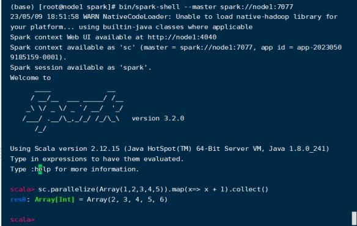
（3）使用spark-submit(PI)提交任务到集群上执行。bin/spark-submit –master spark://node1:7077/export/server/spark/examples/src/main/Pytho
n/pi.py 10
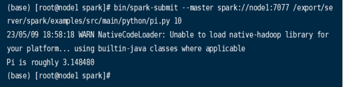
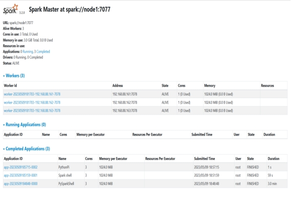
查看历史服务器：在浏览器中输入node1：18080
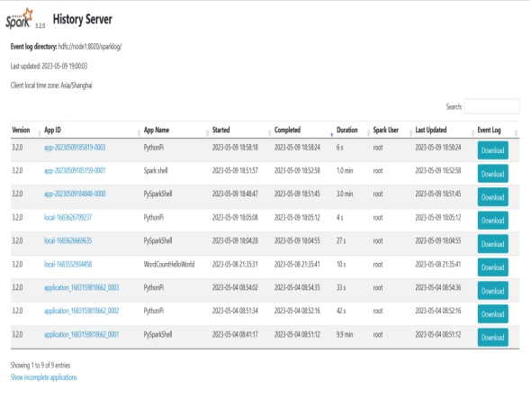